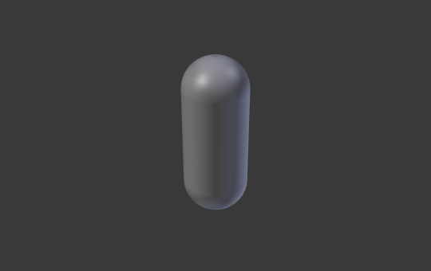

Geometry¶

Curves Geometry panel.
Modification¶
- Offset
Moves the extrusion parallel to the curve normals.
Bézier Circle -1 offset, 0.5 extrusion, 0.25 Bevel Depth, 10 Bevel resolution.
- Extrude
Will extrude the curve along both the positive and negative local Z axes. Turns a one-dimensional curve into a two-dimensional curve by giving it height. With a scale is the sum of both directions, perpendicular to the curve's normals.

Bézier Circle 0.0 extrude (Edit Mode).

Extruded by 0.5 (Object Mode).
{kind=link}
Examples¶
We have three sub-classes of results, depending on whether the curve is open or closed or 3D:
- Open 2D Curve
The extrusion will create a "wall" or "ribbon" following the curve shape. If using a Bevel Depth, the wall becomes a sort of slide or gutter. If your normals are facing the wrong way you can switch their direction as shown here.

Open 2D Curve with Alt-C, fill set to none, zero offset, 0.5 extrusion, 0.25 Bevel Depth, 10 Bevel resolution.
- Closed 2D Curve
This is probably the most useful situation, as it will quickly create a volume, with (by default) two flat and parallel surfaces filling the two sides of the extruded "wall". You can remove one or both of these faces by choosing the fill mode: both, front, back, or none.
The optional bevel depth will always create a 90 degree bevels here.

Closed 2D Curve, 0.5 extrude, 0.25 Bevel Depth, 10 Bevel resolution, Fill: Both.
- 3D Curve
Here the fact that the curve is closed or not has no importance -- you will never get a volume with an extruded 3D curve, only a wall or ribbon, like with open 2D curves.
However, there is one more feature with 3D curves: the Tilt of the control points (see above). It will make the ribbon twist around the curve to create a mobius strip, for example.
Bevel¶
- Depth
Changes the size of the bevel.

A Curve with different Bevel depths applied (Bevel = 0.05).

A Curve with different Bevel depths applied (Bevel = 0.25).
- Resolution
Alters the smoothness of the bevel.

A Curve with different resolutions applied (Resolution = 1).
A Curve with different resolutions applied (Resolution = 12).
- Bevel Object
The Bevel Object controls the cross section of the extruded curve. The Bevel Object can only be another curve both 2D or 3D, and opened or closed. Editing the handles and control points of the Bevel Object will cause the original Object to change shape.

A curve with the Bevel Object as a Bézier curve.

A curve with the Bevel Object as a Bézier circle.
Bevel Factor¶
- Mapping
Allows to control the relation between bevel factors (number between 0 and 1) and the rendered start and end point of a beveled spline. Map the bevel factor:
- Resolution
- To the number of subdivisions of a spline (U resolution).
- Segments
- To the length of its segments. Mapping to segments treats the subdivisions in each segment of a curve as if they would have all the same length.
- Spline
- The length of a spline.
- Start, End
These options determine where to start/end the Bevel operation on the curve. This allows to make a bevelled curve which is not fully covered with a bevel.
Increasing the Start Bevel Factor to 0.5 will start beveling the curve 50% of the distance from the start of the curve (in effect shortening the curve). Decreasing the End Bevel Factor by 0.25 will start beveling the curve 25% of the distance from the end of the curve (again, shortening the curve).
A curve with no Bevel factor applied.

A curve with a 0.6 End Bevel Factor.
Caps¶
- Fill Caps
- Seals the ends of a beveled curve.
Taper¶
- Taper Object
The taper curve is evaluated along the local X axis, using the local Y axis for width control. Note also that: Tapering a curve causes it to get thinner towards one end. You can also alter the proportions of the Taper throughout the tapered object by moving/scaling/rotating the control points of the Taper Object. The Taper Object can only be another curve. Editing the handles and control points of the Taper Object will cause the original Object to change shape.
See examples below.
- Map Taper
- For curves using a Taper Object and with modifications to the Start/End Bevel Factor the Map Taper option will apply the taper to the beveled part of the curve (not the whole curve).
Details¶
- It must be an open curve.
- The taper is applied independently to all curves of the extruded object.
- Only the first curve in a Taper Object is evaluated, even if you have several separated segments.
- The scaling starts at the first control point on the left and moves along the curve to the last control point on the right.
- Negative scaling, (negative local Y on the taper curve) is possible as well. However, rendering artifacts may appear.
- Might need to increase the curve resolution to see more detail of the taper.
- With closed curves, the taper curve in Taper Object acts along the whole curve (perimeter of the object), not just the length of the object, and varies the extrusion depth. In these cases, you want the relative height of the Taper Object Taper curve at both ends to be the same, so that the cyclic point (the place where the endpoint of the curve connects to the beginning) is a smooth transition.
Examples¶
Let us taper a simple curve circle extruded object using a taper curve. Add a curve, then exit Edit Mode. Add another one (a closed one, like a circle); call it "BevelCurve", and enter its name in the Bevel Object field of the first curve (Curve tab). We now have a pipe. Add a third curve while in Object Mode and call it "TaperCurve". Adjust the left control point by raising it up about 5 units.
Now return to the Object tab, and edit the first curve's Taper Object field in the Geometry panel to reference the new taper curve which we called "TaperCurve". When you hit enter the taper curve is applied immediately, with the results shown in Fig. Circle curve set as Bevel Object..
|
Circle curve set as Bevel Object. |

Taper extruded curve. |
You can see the taper curve being applied to the extruded object. Notice how the pipe's volume shrinks to nothing as the taper curve goes from left to right. If the taper curve went below the local Y axis the pipe's inside would become the outside, which would lead to rendering artifacts. Of course as an artist that may be what you are looking for!

Taper example 1.
In Fig. Taper example 1. you can clearly see the effect the left taper curve has on the right curve object. Here the left taper curve is closer to the object origin and that results in a smaller curve object to the right.

Taper example 2.
In Fig. Taper example 2. a control point in the taper curve to the left is moved away from the origin and that gives a wider result to the curve object on the right.

Taper example 3.
In Fig. Taper example 3. we see the use of a more irregular taper curve applied to a curve circle.

Bevel extrusion with Tilt example.